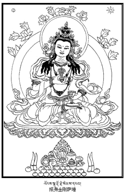
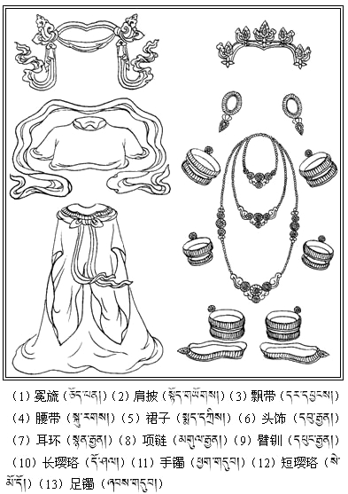
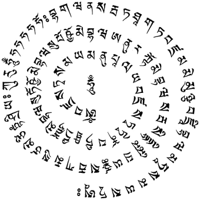
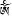
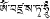

|
念修金刚萨��
离二障垢然示净除障，究竟胜道然现修学相，
超有寂边然显三有中，无等上师足下我敬礼。
丙三（清净违缘罪障――念修金刚萨�剩┓治澹阂弧⑩慊谥�理；二、四种对治力；三、真实念修金刚萨�剩凰摹⒛钚薨僮置鳎晃濉⑩慊谥�功德。
丁一、忏悔之理：
相续中生起甚深道之殊胜证相的主要障碍，就是罪障、习气。为了使阿赖耶的明镜中显现证悟的影像，净除罪障是至关重要的一环，这就好比镜中要映现出影像，擦拭镜面十分关键一样。为此，佛陀宣说了不可胜数净除罪障的方便法门，而在这所有法当中最为殊胜的就是念修上师金刚萨�省�
总的来说，不管是什么罪业，只要忏悔就没有不能清净的。如古代诸大德也曾经这样说过：本来罪业无功德，然忏可净为其德。所以，无论是违犯外别解脱戒、内菩萨学处，还是失毁密宗三昧耶等等，即便是罪业再多么严重，通过忏悔也能得以清净。举个例子来说：婆罗门央具理魔罗，也就是指�N王，他残暴地屠杀了九百九十九个人，但是通过忏悔而清净罪障，并且在即生中获得了阿罗汉果位；再有未生怨王虽然杀害了自己的父亲，但后来通过忏悔而恢复清净，结果仅仅感受了如绸线球触地即刻弹起般短暂的地狱之苦，便从中获得解脱……佛陀在诸经藏中讲述了许多通过忏悔而得清净的公案。怙主龙树菩萨说：“何人昔日颇放逸，尔后行为倍谨慎，如月离云极绚丽，难陀指�N能乐同（详见译者讲述之《亲友书略释》）。”
如果具足四种对治力而诚心诚意、认认真真加以忏悔，就能清净罪业。反之，一边东张西望、胡言乱语、自心随着其他分别妄念转，一边口中发露忏悔等等，仅仅是口头上念诵忏悔文或者认为以后忏悔也可以、今后造罪也无害，诸如此类。如果是这样，那么尽管做了忏悔，但是罪业也不会完全清净，诚如米拉日巴尊者说：“若想忏罪能净否？忆念善法则清净。”所以，不论是任何人进行忏悔，尽其所能具足四种对治力都相当关键。
丁二（四种对治力）分四：一、所依对治力；二、厌患对治力；三、返回对治力；四、现行对治力。
戊一、所依对治力：
在这里，所依对治力就是指，将金刚萨�首魑�皈依境，具足愿菩提心与行菩提心。在别的场合也有其他忏罪的所依对境，比如在《三聚经》中的三十五佛或者善知识、佛像、佛经、佛塔等前进行忏悔都属于所依对治力。此外，发愿行菩提心在一切忏罪当中都是必不可少的。如果没有发菩提心，即使具足四种对治力来忏悔堕罪，也只能稍稍减轻而不能达到彻底清净的效果。如果相续中生起了无伪菩提心，那么往昔造了多少罪业都会自然而然清净，如《入行论》云：“如人虽犯极重罪，然依勇士得除畏，若有速令解脱者，畏罪之人何不依。菩提心如末劫火，刹那能毁诸重罪。”
戊二、厌患对治力：
所谓的厌患对治力，就是说对于以往自己所造的一切罪业生起后悔之心。如果既没有将罪业视为罪业也没有以强烈的追悔心进行发露忏悔，显然不能得以清净。如《三聚经》中云：“发露忏悔，不覆不藏。”此外大成就者噶玛乔美仁波切也说：“若无悔心忏不净，往昔罪业如服毒，当以大惭畏悔忏。”
戊三、返回对治力：
返回对治力是指回想起自己往昔所造的罪业后发誓从即日起纵然遇到生命危险也决不再造这样的罪业。如《三聚经》中说：“从今以后，必断严戒。”《极乐愿文》中也说：“若无戒心不净故，发誓今后遇命难，亦不造诸不善业。”
戊四、现行对治力：
现行对治力，是指尽心尽力奉行对治往昔所造罪恶的善业。尤其是顶礼佛及佛子、随喜他人福德、一切善根回向菩提、发愿行菩提心、护持无伪实相之本体等等，这些都属于现行对治力。
从前，无等塔波仁波切的一个修行弟子向他请教：“我往昔以贩卖佛经维生，如今想起真是追悔莫及，请问上师，我该如何进行忏悔呢？”
仁波切说：“就造那些经典吧！”
于是那个人着手造经典，结果经常心思外散。他又怀着十分沮丧的心情前去上师面前汇报说：“造经典时我心思也是经常散乱，对于忏悔罪业来说，恐怕没有比护持本性更甚深的吧？”
上师异常欢喜地说：“实际上就是如此，纵然往昔所造的罪业积如山王，也能在现见本性的瞬间得以清净。”
因此，净除罪业的方法没有比修菩提心以及恒时护持无伪的实相更为甚深的了。在这里，也要在不离开这二者的基础上，观修金刚萨�省⒔迪赂事丁⒕怀�罪障、念诵百字明等等。
丁三、真实念修金刚萨�剩�
在忆念四对治力之后，进入真正念修金刚萨�实慕锥危�首先自己平平常常地安住下来，在头顶上方一箭左右的虚空中观想一朵千瓣白莲花，它的上面有一轮圆月。所谓的“圆”并不是指它大小的尺度，而是指明月的所有部分完整无缺，就像十五的月亮一样毫无弯弯曲曲而是圆溜溜的意思。接下来再观想月轮上有一个光闪闪的白色��()字。虽然其他宗派有观想从“�恕弊址殴狻⑹展獾炔街瑁�但（宁提派）自宗并没有这种观想。然后观想一瞬间“�恕弊志捅涑闪吮咎逦�三世诸佛的总集、无等大悲宝藏具德根本上师，形象是报身的本师金刚萨�手髯穑�他的身色洁白宛如十万个太阳照耀在雪山上一般，一面二臂，右手在胸前握持表示明空的五股金刚杵，左手依于腰际部位握着代表现空的金刚铃，双足金刚跏趺坐，身上以十三种报身服饰庄严。十三种报身服饰也就是绫罗五衣与珍宝八饰。其中的绫罗五衣：是指冕旒、肩披、飘带、腰带、裙子；珍宝八饰：头饰、耳环（左右二者算为一个）、项链、臂钏（左右二者算为一个）、璎珞、手镯（左右二者算为一个）、指环（所有的指环算为一个）、足镯（左右二者算为一个）（报身服饰中也可将璎珞分为长短两种，计为两饰，不计指环，如图）。金刚萨�视氚茁�佛母无二双运，身体现而无自性，现空犹如水月或镜中现影像一般了了分明。观想自己头顶上的圣尊面向与自己面向相同，以上是所依对治力。这种明观既不是观想成唐卡或壁画一样扁平的，也不是观成土像、金像那样实质物体自性或无情物的形体一般。从显现的角度而言，包括主尊的双目黑白颜色在内都要互不混杂地观想得清清楚楚；从空性的侧面来说，没有一丝一毫实质身躯的血肉内脏等等，就像空中显现彩虹或无垢水晶宝瓶一样。
这样明观以后，自己诚心忆念：与大恩根本上师无二无别的怙主金刚萨�剩�您以大慈大悲垂念我与一切众生，我自己从无始以来迄今为止，身语意所造的十不善业、五无间罪、四重罪、八邪罪，违犯外别解脱的律仪、内菩萨乘的学处以及持明密乘三昧耶戒，背弃世间的盟誓、说妄语、无惭无愧等等凡是能直接回忆起来的一切罪业在上师金刚萨�拭媲埃�满怀惭愧、畏惧、追悔之情以致于心惊肉跳、毛骨悚然，发露忏悔，此外自己想不起来的，在无始流转轮回的生生世世中肯定也积累了许多罪业，这一切罪业在此不覆不藏一并发露忏悔，请求宽恕，但愿这所有罪障就在此时此地急快荡然无存全部清净，以上观想是厌患对治力。


心里默想：我以往因为愚昧无知而造下了那些罪业，如今依靠大恩上师的慈悲而变成了懂得利害的人，从今以后，即使遇到生命危险也决不造那样的罪业，这是返回对治力。
接着念诵（宁提前行仪轨）：


丁四、念修百字明：
随后于金刚萨�史鸶阜鹉肝薅�无别的心间观想一轮明月，大小就像压扁的芥子，月轮的上面有一个白色�耍�）字，宛如毛发写成的一样，一边这样观想一边念诵一遍百字明：

嗡班扎萨�嗜�玛雅、嘛努巴拉雅、班扎萨�实着蛋偷撞妗⒅�桌美巴哇、苏�士ㄔ济腊屯邸⑺詹�卡约美巴哇、阿努日阿�拭腊屯邸⑷�哇斯德玛美扎雅叉、萨哇嘎嘛色匝美则当、协央格热�恕⒐�哈哈哈�俊�班嘎哇纳、萨哇达他嘎达、班扎嘛麦母杂、班扎巴哇、嘛哈萨玛雅萨�拾 �
观想百字明好似竖立的兽角一般互不抵触，旋绕着“�耍�）”字。之后自己的口中以祈祷的方式念诵百字明，观想从所有的咒字中犹如寒冰被火融化形成水滴一样源源不断地降下智悲甘露，通过身体从佛父佛母双运的密处流出，由经自他一切众生的头顶流入，使体内的所有疾病变成脓血，所有魔障变成蜘蛛、青蛙、鱼、蛇、蝌蚪、虱子等小含生的形象，所有罪障变成烟汁、炭汁、灰、烟、云、气的形态，这一切的一切犹如飞泻的洪水冲走尘土一般全部被甘露流毫无阻碍地冲走，从足底、肛门、所有毛孔的部位黑乎乎地排出体外。这时再观想自己下方的大地裂开，所有男女怨家债主围绕着死主阎罗王，它们全都是张着口、伸着手、张着爪来盛接（，上面的脓血等全部冲到它们的口手爪中）。一边这样观想一边念诵百字明。如果能一次性地明观一切所缘境，就这样来观想。如果实在做不到这一点，那么就时而专心致志观想金刚萨�实纳硖濉⒀彰妗⑹直鄣壤茨钏校皇倍�全神贯注地观想主尊的服饰来念诵；时而观想甘露流洗涤魔障、罪障而专心念诵；时而以悔前戒后（追悔往昔所造的罪业、避免以后再犯之心）的心理来念诵。最后观想居于地下的死主阎王等所有怨家债主全部心满意足，至此已经化解了宿怨、偿清了业债、清净了罪障。阎罗王等也都闭上了它们的口、手、爪，裂开的大地又恢复到原状。
接下来观想自己的身体是内外透明光的自性，身体中央有一个中脉，它分出的四轮形如伞辐，脐部幻化轮有六十四个脉瓣，瓣端朝上；心间法轮有八个脉瓣，瓣端朝下；喉间受用轮有十六个脉瓣，瓣端朝上；头顶大乐轮有三十二个脉瓣，瓣端朝下，这些脉瓣也都如前一样降下甘露，从自身头顶大乐轮开始直到四脉轮以及由它们分出的体内一切部分，包括手足的指尖在内全部像水晶瓶里装满乳汁一样盈盈充满白色的甘露，自他一切众生由此获得了宝瓶、秘密、智慧、句义四种灌顶，清净了业障、烦恼障、所知障、习气障四障，相续中生起了喜、殊喜、极喜、俱生喜四喜智慧，现前了化身、报身、法身、自性身四身果位。
接着念诵：


忏悔文念诵完毕，紧接着观想上师金刚萨�屎脱赵蒙�地说：“善男子，你的一切罪障、所失毁的戒律均已清净。”这般予以认可之后，上师金刚萨�驶�光融入自身，以此为缘，自己变成了与前面观想一模一样的金刚萨�剩�在心间扁芥子大小的月轮上，中央是蓝色的�耍�）字，�说那懊媸前咨�的嗡（）字，右边是黄色的班扎（），后方是红色的萨（）字，左边是绿色的�剩�）字，然后在念诵“嗡班扎萨���恕保�）的同时，观想五咒字放射白、黄、红、绿、蓝五色光，光的顶端有嬉女等供养天女挥手散出八吉祥徽、轮王七宝、幡伞、宝幢、华盖、千辐金轮、右旋海螺等无量供品，供养居于十方广大无边、不可思议刹土中的诸佛菩萨，令他们心生欢喜，从而圆满了资粮、清净了罪障。再观想所有佛菩萨的一切大悲、加持成五颜六色各种各样的光融入自身，自己现前了殊胜与共同成就、与学道相关的四种持明（异熟、寿命自在、大手印和任运持明）以及究竟果位――无学道双运果位，这是准备自利法身的缘起。又观想这五个咒字向下放射出无量光芒照耀三界六道一切众生，使他们相续中所有的一切罪障、痛苦、习气等犹如太阳出现在黑暗处一样烟消云散，一切外器世界变成现喜刹土，一切内情众生变为白、黄、红、绿、蓝五色金刚萨�实淖孕裕�之后他们全部口诵“嗡班扎萨���恕保�传出一片嗡嗡之声，这是准备他利色身的缘起。如《法行习气自解脱续》中说：“射收二利净除分别障。”这其中讲的也是上述的这种要诀。依靠这样的观想要诀，加上密宗金刚乘善巧方便的要点一瞬间就可以圆满不可思议的福慧资粮，同时也能够成办利益天边无际众生的事业。如此尽力念诵金刚萨�市闹洹５阶詈笫兆�时观想为现喜刹土的一切外器世界全部收摄在内情五部金刚萨�首鹬谥�中，他们也依次化光融入自身，自身也从边缘逐渐化光融入心间的“嗡（）”字中、“嗡（）”融入“班扎（）”、“班扎（）”融入于“萨（）”、“萨（）”融于“�剩�）”、“�剩�）”融入“�耍�）”字的“雅布杰（）”、“雅布杰（）”融入“小阿（）”、“小阿（）”融入“哈（）”、“哈（）”融入头部的日月明点（）中，到“那达（代表法界的一种符号观修生起次第时需要观想）（）”之间次第融入，最后“那达”也如彩虹消于空中般消失得无影无踪，就这样在无缘离戏的境界中稍许放松而入定。当又开始生起分别念时，再度将一切器情明观为金刚萨�噬餐粒�并念诵：
以此等来作回向、发愿。在念修金刚萨�实热魏文钏衅诩洌�心思专注所缘而不散他处、不夹杂闲言碎语，这一点相当相当重要。如续部中说：“若无此等持，如海底磐石，诵数劫无果。”又说：“净与不净差千倍，有无等持差十万。”念修密咒时，如果掺杂一些庸俗不堪的闲言碎语来念诵，那么他所念的密咒就是不清净的念诵。举个例子来说，就算是在纯金、白银中掺杂微量的黄铜或普通铜，也只能被人们称为非金或伪银了，它们再也起不到纯金纯银的作用。邬金莲花生大师也说：“杂有绮语诵一年，不如禁语诵一月。”
当今时代，有些经忏师在大众中念经、诵咒期间，尽力做到禁语也是十分重要的一点。杂有庸俗绮语的念经、诵咒等没有什么实义，特别是做超度亡灵等佛事时，那些正在中阴界遭受恐惧、痛苦等逼迫的众生为了获利，会满怀希望地跑到上师僧人们面前，那时如果他们既不能明观等持，也不具足清净的戒律与誓言，而且口中说些贪嗔的话，心里一直胡思乱想，结果具有神通的那些中阴身知晓后，便对这些上师僧人们起邪见或生嗔心，以此为缘将堕入恶趣。这类上师僧人有还不如没有的好。
尤其密宗金刚乘所有的仪轨就是所谓的“明观生次词句门”。本来，明观生起次第的要义必须要依靠词句来观想，可是有些人对于本该观想的生圆次第的意义，丝毫也不专注，只是口头上以各种不同的语调铿锵有力、抑扬顿挫地吟诵“明明观观修修”等仪轨的词句，到了最为关键的讽诵心咒的时候，心情顿然放松下来，甚至原来端坐的身姿也已经东倒西歪了，开始吸起百恶之源的烟草，谈论“沟头沟尾”等无关语，开启了众多绮语伏藏之门（指讽刺那些言说各种毫无意义的闲言碎语），就像捋黑色肠子般空空地数着念珠来混日子。到了下午时分抬头望望天空，便开始念诵“班扎布白得贝……”，吹打法器发出巨响（而念完仪轨）。这种讽诵仪轨简直是形象中最低等的形象，诸如此类的形象佛事，真不如以清净心念诵一遍《三十五佛忏悔文》或《普贤行愿品》好。依靠这种不清净的念诵及形象的仪轨将亡魂引入恶趣的那些上师僧人们，对活人作佛事也同样只能是弊大于利。这类人享用信财，确实好似食用炽燃的铁丸一般。所以，享用信财、亡财者，无论是上师还是普通僧人都是同样，切切不要只是将注意力放在肉块大小、油饼薄厚、供养好坏上，而应当对于那些处于紧要关头、倍受痛苦、无依无怙的病人或死者一视同仁，发心利益他们，以慈悲心、菩提心摄持而行事，专心致志勤奋努力念修自己所了达的生圆次第法门。不能做到这样的人，也应该随着词句思考意义，或者至少也要怀着一颗慈悲的心肠怜悯这些可怜的众生、对三宝的无欺谛实力生起信心、定解等等，总之身语意三门要集中精力。如果能够做到仪轨念诵音正、清晰、发心清净，那么依靠皈依处三宝的大悲力、无欺因果的威力以及菩提心的无量功德等，必定会使病人或死者受益匪浅。而且，诚如人们所说的“于人垫上净己障”，同时也能使自他二种资粮得以圆满，并将凡是结缘的众生安置在解脱道中。因此，我们必须竭尽全力这样去做。
如今有些本来被人们一致共称为比较贤良并且明晓因果的上师僧人们，却因为害怕享用信财、亡财的过患，甚至对病人、死者等倍受痛苦的众生连加持、回向、发愿等佛事也不肯做，这真正已经断绝了慈悲心、菩提心的根本。另有些过于注重一己私利的人，到了施主家以后，在大众行列中，需要为施主家念诵的经不念，反而取出自己那黑乎乎的念诵集，认为自己的诵经功课不能间断而装模作样地念起来，他们对自己的一点点念经、诵咒竟然如此认真谨慎，并且认为这完全可以净除自己的罪障以及享用信财的罪过，而在为施主家念诵的大众行列中却东张西望、胡言乱语、心不在焉，全然不考虑那些本该救护的众生――死者或活人的利益。这些人已经断绝了慈悲菩提心的根本。即使他们后来尽力净除享用信财的罪过，然而以自私自利的恶心也很难清净享用信财的障碍。
所以说，如果我们最初就能以慈悲、菩提心为本，尽己所知、尽己所能、诚心诚意精进修行生圆次第等都不离开想利益众生的动机，那么无论是在自家还是到他家观修生圆次第、念经、诵咒都没有丝毫差别。不管怎样，远离私欲之心，一心一意利益他众，这点都是完全相同的，因此我们一定要、必须要希求这种目标。
丁五、忏悔之功德：
如果一心专注所缘境、不掺杂庸俗的话语一次性地念诵一百零八遍百字明，那么往昔所造的一切罪障及所失毁的戒律一定会得以清净，这是上师金刚萨�是卓谠逝档摹！段薰糕慊谛�》中也说：“百字明是一切善逝的智慧精华，能够净除所失毁的戒律与分别念的罪障，堪称为一切忏悔之王。倘若一次性念诵一百零八遍，便可酬补一切所失之戒，不会堕入三恶趣。任何一位瑜伽行者如果能发誓念诵，不但此人今生会被三世诸佛视为胜妙长子而加以护佑，而且命终之后也无疑会成为诸佛的长子。”此外，进入密宗金刚乘之门以后，无论失毁了根本誓言还是支分誓言，如果每天观想金刚萨�识�念诵二十一遍百字明，就叫做加持堕罪，也就是说，堕罪所产生的异熟果不会越来越增长。如果念诵十万遍百字明，则可彻底清净一切堕罪。如《庄严藏续》中说：如果念诵十万遍百字明，那么一切堕罪都能从根本上得以清净，此续中云：“妙观白莲月垫上，上师金刚萨�首穑�依百字明之仪轨，倘若念诵二十一，即将加持堕罪等，使其不复得增长，诸成就者所宣说，故当恒时而修持，倘若已诵十万遍，必成清净之本性。”
当今时代在藏族这片领域内，上师僧人包括俗家男女在内，可以说没有谁未曾受过灌顶，所以没有谁不是入了密宗之门的。趣入密乘之后，如果不守誓言势必会招致堕落地狱的下场，倘若守誓言便可以获得圆满佛果，除了这二种可能性以外别无出路，就像把蛇放在竹筒中一样。比如说，竹筒里的蛇，只能是上去或下去，再没有别的出路。《功德藏》中也说：“入密士夫之去处，恶趣佛外无三处。”分类细致、种类众多的密宗三昧耶戒又是极其难以守护的，所以阿底峡尊者也曾经说：“进入密乘时接连不断地出现过失。”既然尊者尚且如此，那么如今我们这些对治力薄弱、丧失正念、无有正知、不晓堕罪种类的人，所犯的堕罪数量毫无疑问会多如雨水，因此我们应当立下誓言：随时随地念修金刚萨�识灾握庑┒樽铮�从今以后最起码也是做到每天不间断念诵二十一遍百字明，这一点极为重要。
如果自己已经精通了生圆次第的要诀，即使依靠正知正念明观等方法没有犯过失毁三昧耶的错误，但是，也会因为与其他失毁根本誓言的人互相交谈、接触往来，甚至共同饮用一山谷的水也会产生相对失戒、株连失戒的罪过，所以我们务必要精进忏悔、净除罪障。续部（《无说义忏续》）中说：“酬补失罪交往失戒者，于失戒非器者宣讲法，不加警惕彼等失戒者，必将染上冒渎晦气（违犯誓言招致的不祥）过，一切此生违缘来世障，以悔自过之心发露忏。”
在（僧众）集会行列中，即便只有一个破誓言的人，在场的人也都将被他的冒渎晦气所染污，具体点说，就算是有成百上千的具誓言者也不会得到丝毫修行的成果，就像一滴坏奶损坏满满一锅鲜奶或者一只带疮的青蛙传染同住的全部青蛙一样。如颂云：“犹如一滴腐奶汁，可毁一切鲜奶汁，失毁誓言之一人，能毁诸具誓言者。”
不仅如此，就算是一位上师、高僧大德、成就者也避免不了被冒渎晦气染污上。举个例子来说，往昔卓滚朗吉日巴尊者曾在匝热地区期间，一次，由于鬼神制造违缘，将正午的太阳隐蔽不见，变成繁星闪烁的漆黑夜晚，可是尊者却无阻无碍地来到了黑红血湖畔，唱起金刚歌、跳起金刚舞，并在石头上留下足迹，至今仍然清晰可见。虽然是这样一位大成就者，但是后来因为一个破誓言的弟子来到他面前，结果染上了冒渎晦气而导致神志不清，不能言语成了哑人。此外，成就者俄坚巴也曾在道歌中说：“雪域乞人仁亲花（指其本人），仅有失戒敌可害，唯有师尊能救护。”
所以说，如若失毁密宗金刚乘的三昧耶戒，罪过极其严重，并且守持也十分困难。不观察自相续认为我具足誓言而心生我慢的人，终究一事无成。正如密宗诸续部中说：“三门即使一刹那离开三坛城之本性也违越密宗誓言。”
显而易见，（密宗金刚乘的誓言）有多么的难以守护。如果详细分类，不下十万种誓言，数量繁多，而且失毁誓言的罪过也相当严重。诚如续部中说：“金刚罗刹痛饮其心血，短寿多病失财畏怨仇，长久住于无间地狱中，极其恐怖感受难忍苦。”因此，我们必须随时随地兢兢业业观修金刚萨�剩�念诵百字明，忏悔对治一切能想起或想不起所失毁的戒律、堕罪。古大德也曾经说过：初需未染罪，一旦染上罪，忏悔极关要。如果加以忏悔，那么失毁密宗誓言的罪业也可轻而易举得以清净。声闻乘中说：如若违犯一次根本堕罪，就像瓷器破碎一般无法恢复。破菩萨戒则如同珍宝用品破碎一般，比如，珍宝用品碎了，可以依靠能工巧匠得以修复。同样，依靠他缘善知识可以酬补菩萨戒；密乘戒则好似稍有凹陷的珍宝用品一样，也就是说，自己依靠本尊、密咒、等持进行忏悔完全可以清净无余。如果（违犯后）毫不迟疑立即忏悔，就容易清净，时间拖得越久，罪业会越来越增长，忏悔也有一定的难度。一旦超过了三年以上，就已经逾越了忏悔的期限，即使作忏悔也无法清净。
此外，作为凭借咒力与加持来救护他众、中止冰雹、消除瘟疫、治病救人以及使幼童健康成长等等兼顾自他二利的人们也是一样，要想具备咒力及加持，必须净除语障。而使语障清净的方法也无有比精华百字明更为殊胜的。所以，随时随地精进念诵百字明至关重要。我的至尊上师曾经以开玩笑的口吻说：“想救护他众、享用信财亡财的人首先必须净除语障，为此念诵一千万遍百字明是必不可少的。”上师的弟子中有许多已经念诵了一、两千万遍百字明，最低也都圆满念诵了二、三十万遍。
上师金刚萨�适羌�百部于一部的自性，称为大密一部金刚萨�省：棋�无垠、不可思议的一切寂猛本尊也无不包括在金刚萨�手�中。因为本体观为与根本上师无二无别，所以也总集了上师瑜伽，称为珍宝总集的观修法，是极其甚深究竟的法门，正如前所说密咒当中没有超过咒王百字明的。因此，我们应当了知何处也再没有比这更深的法了。
闻益窍诀然却耽词句，稍许实修然为散乱欺，
我与如我迷相众有情，愿得生圆精华祈加持。
净除业障法――观修上师金刚萨�手�引导终
|